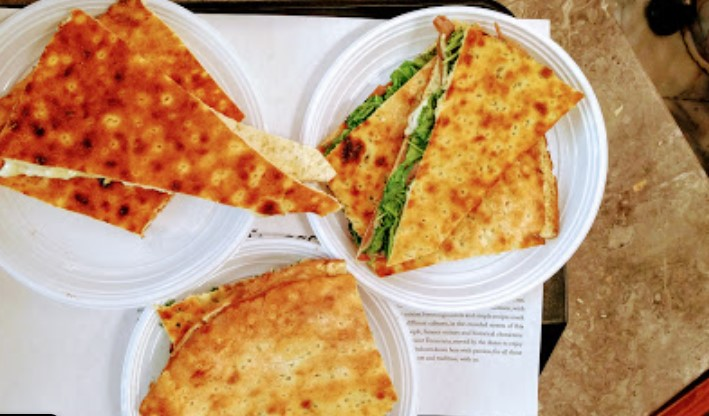
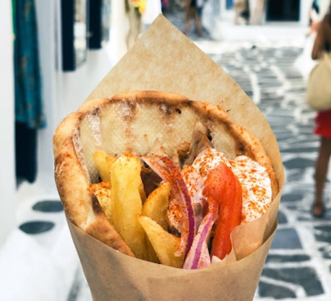
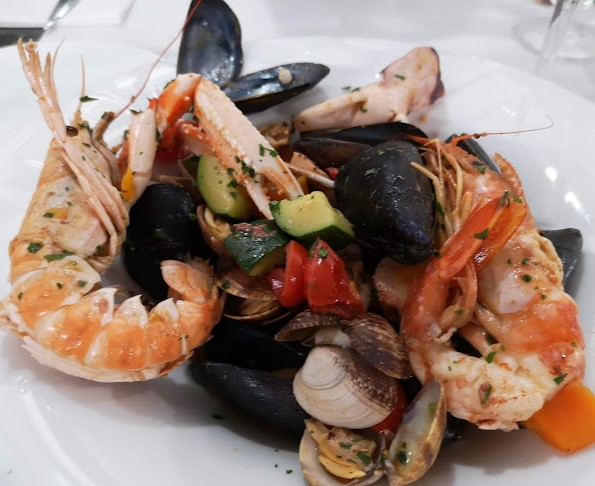
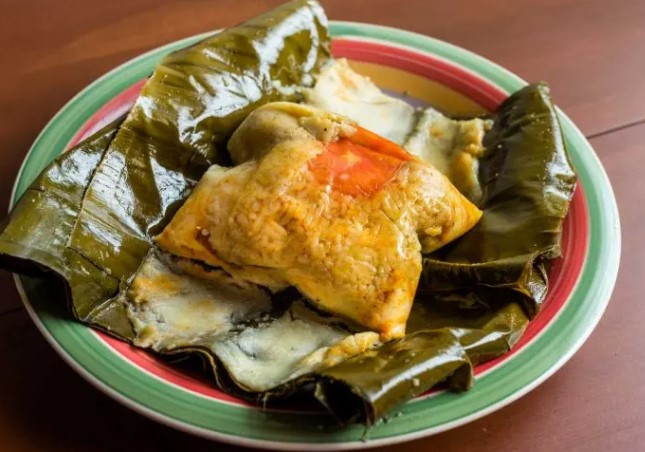
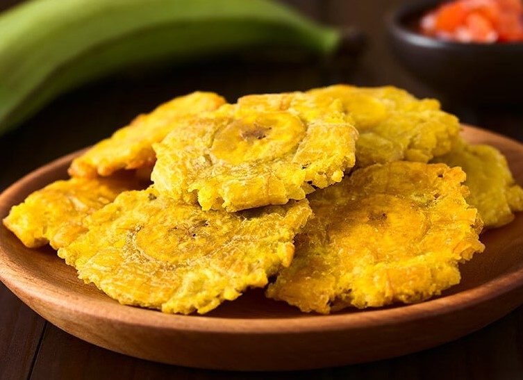
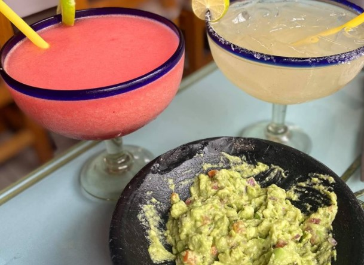
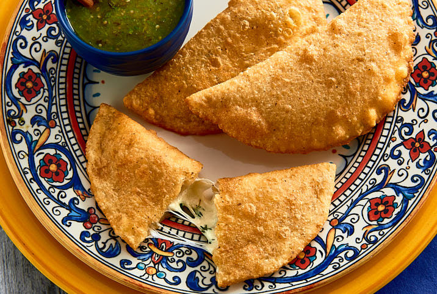
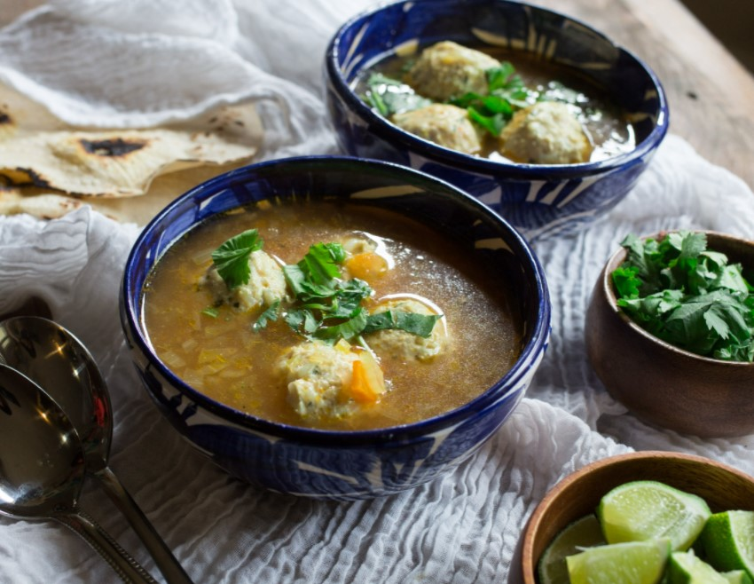
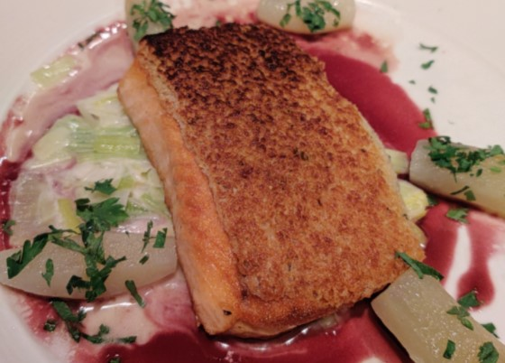
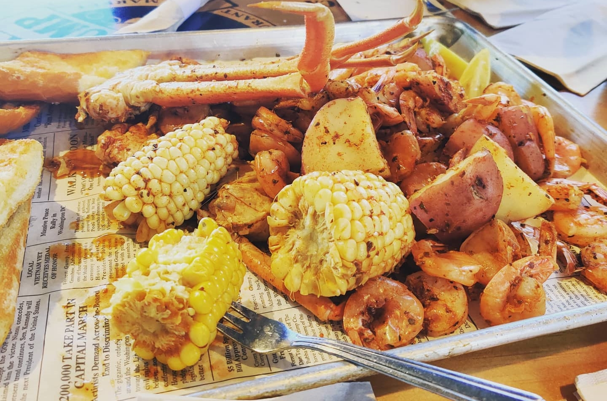

Pizza Napoletana, is a type of pizza that originated in Naples, Italy. This style of pizza is prepared with simple and fresh ingredients: a basic dough, raw tomatoes, fresh mozzarella cheese, fresh basil, and olive oil. No fancy
toppings are allowed!
Torta Tenerina, Venezia Italy
Torta tenerina (Moist chocolate cake) is traditional dessert from the city of Ferrara, but its delights have conquered all of Italy.
Pasta a la Carbonara, Civitavecchia Italy
Carbonara is an Italian pasta dish from Rome made with eggs, hard cheese, cured pork, and black pepper.
Wine, Messina Italy
It has a delicate persistent taste, a faintly fruity flavor, slightly velvety, savory and fresh; expresses its uniqueness and complexity by a processed and bottled in clear, especially well-expresses its colour and structure by
ageing in barriques.
Gelato, Rome Italy
Gelato is the Italian word for ice cream (the word literally means "frozen.") However, gelato is made differently from ice cream. Authentic gelato is made in the following method: Make a custard of (at the very least) milk, cream,
and sugar over medium heat. Once the ingredients are properly blended, add any flavorings, like chocolate, chopped pistachios, or fruit. Churn the gelato slowly as it cools, either by hand or with a machine.
Panini, Palermo Sicilly
A panini or panino is a sandwich made with Italian bread, sometimes they are served warmed by grilling or toasting.
Greek Sandwich, Pireaus Greece
These sandwiches are truly a work of art. With ingredients like easy eggs, mozzarella cheese, bacon, basil and Greek touch. These sandwiches are a true delight in the morning.
Greek Breakfast, Rhodes Greece
Breakfast in Greece has its own unique history. In villages around the country, it used to be not only the most important meal of the day in terms of nutrition, but also the most filling. Served with sausages, eggs, sweet beans,
mushrooms, and tomatoes.
Gyro, Mykanos Greece
In Greece, gyros is normally made with pork. This is a sandwich made of sliced roasted meat, usually lamb or beef, combined with onion, tomato, seasoning, and often tzatziki sauce, and wrapped in pita bread.
Mussels, Ajaccio France
Moules à la marinière is a classic French dish that consists of mussels cooked in cider or wine-based sauces. The dish is typically made with shallots, garlic, and herbs such as parsley, thyme, and bay leaves, which are sweated
in some butter before being combined with white wine or cider.
Linguine with Clams and Prawns, France
A light garlicky sauce simple pasta sauce with fresh clams and prawns tossed with linguine.
Tapas and Sangria, Barcelona Spain
In Spain, there is not better combination then Tapas and Sangria. Sangria includes a punch, red wine and chopped fruit, often can include spirits. Tapas can include practically anything―from a chunk of tuna, a cocktail onion, and
an olive skewered on a long toothpick, to piping hot chorizo sausage served in a small clay dish, to a gourmet slow-cooked beef cheek served over a sweet potato puree.
Mozzarella Meatballs, Valleta Malta
Located along the port you find these tasty bites. The meatballs are made of meat is combined with breadcrumbs, egg and seasonings and then wrapped around cubes of mozzarella cheese.
Macaroon, Monte Carlo Monaco
In such a luxurious place like Monaco you can probably find everything, including some delicious Macarons from the Parisian Mansion Laduree. A macaron is made by combining icing sugar and ground almonds into a fine mixture.
Durum, Istanbul Turkey
A dürüm or dürme is a Turkish wrap that is usually filled with typical döner kebab ingredients. The wrap is made from lavash or yufka flatbreads.
Pita Bread with Hummus, Istanbul Turkey
Hummus with pita bread is a classic middle eastern snack. Hummus is a Levantine dip or spread made from cooked, mashed chickpeas or other beans, blended with tahini, olive oil, lemon juice, salt and garlic. Hummus dip is most commonly
eaten with Pita bread.
Risotto, Dubrovnik Croatia
This black, almost-scary looking dish can be found all over Croatia, but it traditionally comes from the coastal areas of Croatia. This dish has an intense seafood flavor and smell. It’s certainly not for those who don’t absolutely
love seafood! Influenced by our Italian neighbors.
Caprese Salad, Dubrovnik Croatia
A salad consisting of slices of mozzarella and tomatoes, basil, and olive oil or Italian dressing.
Latin American
Nacatamal, Nicagragua
A nacatamal is a traditional dish found in Nicaragua similar to the tamal and to the hallaca. Rather than using masa or corn flour, these delectable dessert tamales are made with corn kernels, cream, and queso fresco sweetened
with sugar.
Patacones, Panama
Patacones or Tostones are made from green plantains peeled and cut cross-wise. Patacones are fried twice.
Coco Heaven, Panama
Coco Heaven is a creamy, fruit drink that’s like a pina colada’s more refined relative. Instead of pineapple, use watermelon. On a hot day, this delicious Coco Heaven is precisely what you’ll want to drink.
Pescado Entero, Honduras
The whole fried fish is a famous dish throughout Honduras. Red Snapper or smaller fillets, fried whole, come with medium-ripe plantains, firm with a touch of sweetness. Served with splash of lime, generous amounts of chili sauce.
Empanadas, Colombia
These Colombian Empanadas are a popular snack in Colombia and are served by most Colombian restaurants. They’re made of crunchy cornmeal dough, filled with a creamy, aromatic beef and potato filling, spiced with Latin seasonings.
Coffee, Colombia
Colombia is famous for growing some of the best coffee beans in the world; the plants thrive under the shade of banana trees in the tropical climate. Because of Colombia’s high altitude, it also shapes the way the bean grows.There
isn’t really a traditional style of Colombian coffee, but Colombian beans are the best choice for crafting certain brews. The lighter, brighter flavors make the beans ideal for both a cup of light roast and for a rich cappuccino.
Nicagragua, Carne Asada
Nicaraguan-Style Carne Asada uses ribeye steaks cut into long strips about 5 inches long and 1 1/2 inches wide. For the marinade, orange juice and cloves of minced garlic are used. And finally served with fried bananas and pico
de gallo.
Guacamole with a Margarita, Jalisco, MX
When sipping on Margaritas in Puerto Vallarta beach, nothing goes better with the tasty frozen drink then Guacamole and chips.
Leche de Tigere Ceviche, Aguascalientes
Leche de Tigre (meaning tiger's milk) is a ceviche beverage made from raw fish marinated in citrus fruits and spiced with peppers, onions, and other seasonings.
This popular traditional breakfast dish features lightly fried corn tortillas cut into quarters and topped with green or red salsa (the red is slightly spicier). Scrambled or fried eggs and pulled chicken are usually added on top,
as well as cheese and cream.
Quesadillas, Mexico City, MX
Quesadillas are quintessential Mexican street food and in Mexico City, surviving on quesadillas alone wouldn’t be too tough: you could have one with squash blossoms and cheese for breakfast, a hearty potato and sausage quesadilla
for lunch, and a couple of deep-fried quesadillas in the evening.
Tamales de Yucatan, Mx
Yucatecan tamales can be prepared baked, steamed, or even buried, and are wrapped with different leaves, such as banana, almond, and holly leaf (hoja santa). They are filled with corn dough, pork, chicken, egg, ground pumpkin seed,
chaya, or xpelón, which is a type of bean from the region.
Gorditas, Celaya, Guanajuato Mexico
Gordita means "chubby" in Spanish. A gordita in Mexican cuisine is a dish made with masa and stuffed with cheese, meat, or other fillings.
Crema de Frijol, Queretaro
Crema de Frijol is a creamy bean soup made with beans, Mexican crema, chile de arbol and butter. This creamy black bean soup is incredibly aromatic and the perfect dish to make when you are in the mood for some Mexican comfort
food!
Enchiladas, Jalisco, MX
Enchiladas are a traditional Mexican dish with a unique flavor and a very long history. Their delicious taste has made them a popular menu item at many Mexican restaurants. With the perfect combination of tortilla, meat, cheese,
and sauce, enchiladas have become a symbol of a traditional Mexican meal.
Tequila, Chapala Jalisco, MX
Tequila is a distilled spirit made from the agave plant that can only be produced in certain regions of Mexico. There are several styles of tequila and specific regulations that distillers must follow.
Tacos, Aguascalientes Jalisco, MX
A taco is a traditional Mexican dish consisting of a small hand-sized corn or wheat tortilla topped with a filling. Lupes in this city makes in my opinion the best beef stuffed tacos.
Carnitas, Morelia Michoacán, MX
Carnitas, literally meaning "little meats", is a dish of Mexican cuisine that originated in the state of Michoacán. Carnitas are made by braising or simmering pork in oil or preferably lard until tender.
Sopa de Albondigas, Queretaro, MX
Caldo de Albóndigas or Albondigas en Caldillo is a traditional Mexican meatball soup, served in a light and healthy broth full of vegetables
America
Smoked Salmon, Eiffel Tower at Paris Las Vegas 
Smoked salmon is a preparation of salmon, typically a fillet that has been cured and hot or cold smoked. This is a true joy to taste while having an incredible view to Las Vegas City.
Wine, Napa California
Napa Valley is most recognized for Cabernet Sauvignon. Beyond that, the most popular varieties are Merlot, Chardonnay and Pinot Noir. There are just over 45,200 total acres planted with vineyards, making up one tenth of the area.
Steaks and Lobster California
A Filet Mignon accompanied by a Lobster Tail Scampi is a true delicacy. This piece of meat will just melt in your mouth. The service is no short then excellent at this establishment.
Sushi Wrap, California
Nori (海苔) is a dried edible seaweed used in Japanese cuisine. This is used to wrap the Sushi filling. Made with crispy tempura shrimp, cucumber, avocado, & finished with an umami sushi sauce.
Monterey Bay Fish
At Bubba Gump Shrimp Company is an American seafood restaurant. It serves large platters of fish, prawns, crab, etc. Willing to get you hand dirty this is a meal you cannot miss when in the area.
Crab Cakes, Tracys Crab Shack, Juneau Alaksa
These Crab Cakes are nothing short of great, Freshly caught crab served daily in the Alasan Region. It is a waterfront, walk-up shack featuring locally caught crab legs, bisque, cakes & other seafood bites.
Crepes, Crepe Escape, Juneau Alaska
These Crepes are delicious with sweet or savory falvors to choose from, you might want to eat them every day. These is in my opion the most delicious crepes Ive ever had.
Eggs Benedict at Boathouse, Santa Barbara
This dish consists of 2 poached eggs on a toasted English muffin, hollandaise sauce and choice of one of the following: spinach, real or mock turkey, real or mock bacon, real ham. With view of the Pacific, it is a true treat.
Australian/Asian
Buttermilk Panacakes, La creppe, Melbourne AUS
These pancakes are soft and fluffy, topped with fresh berries and powedered sugar. It has a distinctive creamy, buttery taste.
Meat Pie, Sydney Australia
The great Australian Meat Pie!! Shortcrust pastry filled with slow cooked chunky pieces of beef in a rich gravy topped with golden puff pastry, this meat pie recipe requires patience but you will be regarded as a bloody legend
by everybody fortunate enough to try one!
Chicken Parmigiana, Perth Australia
Chicken parmigiana, or chicken parmesan, is a dish that consists of breaded chicken breast covered in tomato sauce and mozzarella, parmesan, or provolone cheese. In a Beach restaurant north of Perth shipping port, you will find
these delicious meal.
Barbecued Snags (sausages)
Barbecue snags are thick Australian sausages, usually with a mild flavor and made with beef, pork, garlic, and onions. They are a staple of almost every Australian barbecue party, where the sausages are accompanied by mashed potatoes,
grilled onions, tomato sauce, barbecue sauce, salads, chutneys, and loaves of artisanal bread on the side.
Burger With 'The Lot', Adelaide Australia
These filler burgers are made with 100 percent Australian Beef. These are truly a mouthful, with eggs, hashbrowns, lettuce, tomatoe, bacon and freshly baked bread.
Hāngī (food cooked under the ground) Taurunga New Zealand
Hāngī is a traditional New Zealand Māori method of cooking food using heated rocks buried in a pit oven, called an umu. Having tasted sausages, chicken, vegetables,and beef. It was a savory trip in this New Zealand mountain.
Avocado Toast with a Latte, Akaroa New Zealand
Avocado toast is a delicious and simple breakfast, snack or light meal! These locations service tasty vanilla Lattes with a Crunchy Avocado toast to feed your hunger.
Afghans, Napier New Zealand
Afghan cookies are a melt-in-the-mouth chocolate cookie with lovely crunches of cornflakes throughout, often topped with a walnut. While you would be forgiven for thinking that the name harks back to a middle-eastern origin, these
toothsome morsels are 100% Kiwi.